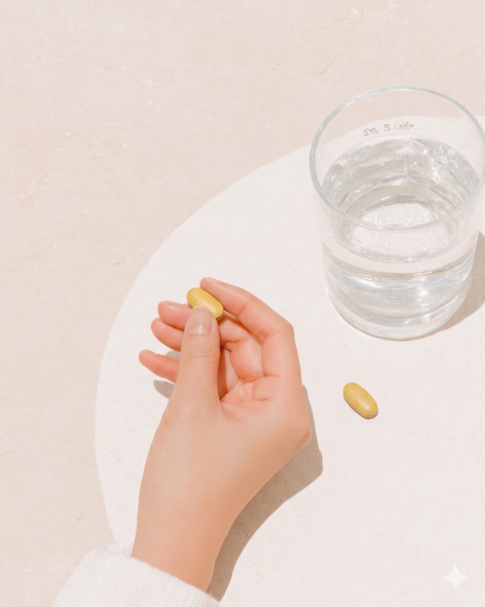

루즈루틴 이지컷
브로멜라인 + 퀘르세틴


브로멜라인 + 퀘르세틴
4가지 복합 성분

793+
누적 리뷰
93%
5점 비율
64.7%
재구매율
브로멜라인
부기 직접 분해
퀘르세틴
흡수율 향상·항염
수국잎
림프 순환
차전자피
장 건강·배출
제품명루즈루틴 이지컷
주요 성분브로멜라인 · 퀘르세틴 · 수국잎 · 차전자피
섭취 방법1일 2캡슐, 공복 또는 식전
특징골든밀크 대비 0kcal, 준비 0분, 국내 제조